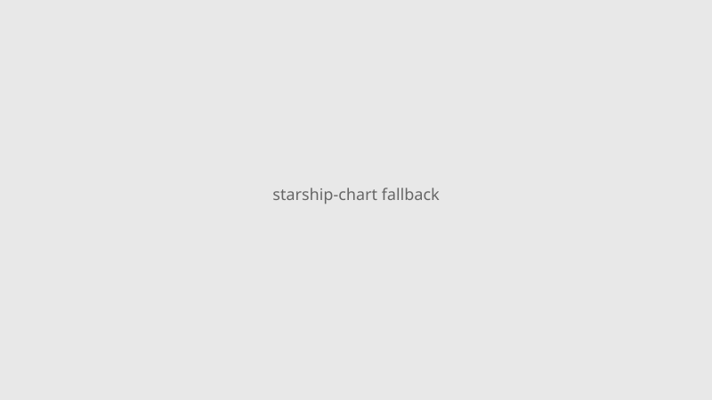

Starbase, Texas · Spaceflight · 28–29 September 2026
SpaceX Starship reaches Earth orbit for the first time on Flight 14 and deploys 26 Starlink satellites

What is agreed across desks
SpaceX Flight Test-14 lifted off from Starbase at approximately 07:48 local on 28 September 2026. The upper stage reached low Earth orbit for the first time. After insertion it deployed 26 Starlink V3 satellites. Controllers directed an early deorbit; splashdown occurred in the North Pacific near Hawaii after roughly three hours rather than the planned multi-orbit profile. One upper-stage Raptor shut down early during ascent; after a brief hold the insertion burn proceeded. The Super Heavy booster splashed down in the Gulf of Mexico as planned. Prior flights were deliberately suborbital.
What is only a quote or under investigation
SpaceX described the mission as a success for achieving orbit and payload deployment. The root cause of the engine anomaly has not been released in a formal report. Claims of readiness for routine operations or Artemis remain forward-looking.
Mechanism and history
Starship is a two-stage reusable design. The first thirteen integrated tests stayed suborbital so any loss of control still ended in the ocean. Flight 14 was the first attempt to circularize. Orbital insertion required a Raptor restart after ascent—an operational step not previously demonstrated on this vehicle.
What the story is not
Not a crewed flight, not a landing demonstration, not a completed multi-orbit endurance test. The early return means the full planned thermal profile was not flown.

Source articles and scores
| Outlet | Headline | T | N | C |
|---|---|---|---|---|
| Reuters | SpaceX Starship makes orbital debut deploying Starlinks before early ending | 96 | 0 | 100 |
| NYT | SpaceX’s Starship Makes It to Orbit for the First Time, but Returns to Earth Early | 94 | 0 | 100 |
| TechCrunch | SpaceX’s Starship rocket reaches orbit for the first time | 93 | +5 | 98 |
Hero: Commons type photo via Special:FilePath. Chart local SVG. No news CDN sole src. No crossorigin.